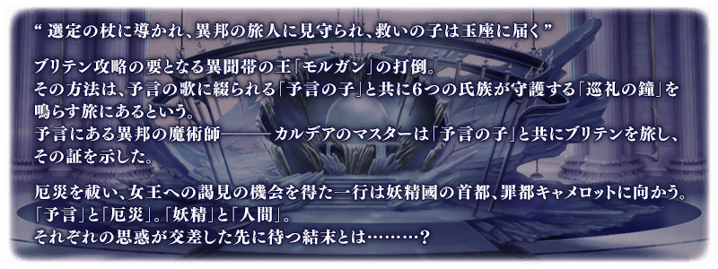
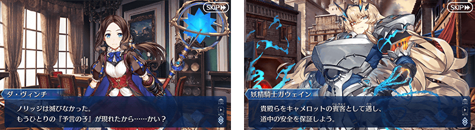
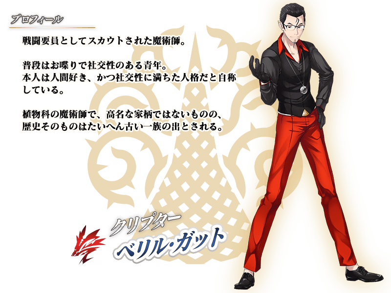

◆第2部 第6章「Lostbelt No.6 妖精圓卓領域 阿瓦隆・勒菲 星辰誕生之刻」(後篇)開幕◆
第2部 第6章「妖精圓卓領域 阿瓦隆・勒菲 星辰誕生之刻」(後篇)中，在神秘之島不列顛賭上妖精和人類未來的戰鬥拉開了帷幕。
見證透過預言之歌被紡織化做妖精樂園的不列顛的將來吧！
※本頁面皆為開發中圖片。會有與實際圖片相異的情況。
◆公開時間◆
2021年7月14日(三) 19:30～
◆開放條件◆
通過第2部 第6章「Lostbelt No.6 妖精圓卓領域 阿瓦隆・勒菲 星辰誕生之刻」(前篇)後開放。
※不需要通過亞種特異點(從Ⅰ到Ⅳ)。
追加章節配信！
【8月4日(三) 17:00追記】
自2021年8月4日(三) 17:00，配信享受第2部 第6章「Lostbelt No.6 妖精圓卓領域 阿瓦隆・勒菲 星辰誕生之刻」(後篇)之後故事的追加章節。
※在第2部 第6章「Lostbelt No.6 妖精圓卓領域 阿瓦隆・勒菲 星辰誕生之刻」(後篇)登場的一部份客串從者，會與原本的從者有所差異，調整成本故事限定性能的情況。 ※第2部 第6章「Lostbelt No.6 妖精圓卓領域 阿瓦隆・勒菲 星辰誕生之刻」的自由關卡，會在通過所有主線關卡後開放。

在「Fate/Grand Order」官方網站內首頁及Gallery，公開了第2部 第6章「Lostbelt No.6 妖精圓卓領域 阿瓦隆・勒菲 星辰誕生之刻」(後篇)的電視廣告。敬請確認。
※2021年7月14日(三) 19:30～7月31日(六) 11:59的期間中，在最初起動程式時會播放第2部 第6章「Lostbelt No.6 妖精圓卓領域 阿瓦隆・勒菲 星辰誕生之刻」(後篇)的的廣告影片。 ※期間中，第2部 第6章「Lostbelt No.6 妖精圓卓領域 阿瓦隆・勒菲 星辰誕生之刻」(後篇)的廣告影片會登錄到個人空間(マイルーム)的圖鑑(マテリアル)，在期間結束後刪除。
【第2部 第6章「Lostbelt No.6 妖精圓卓領域 阿瓦隆・勒菲 星辰誕生之刻」(後篇) TVCM】
動畫製作：A-1 Pictures

【7月16日(五) 19:00追記】
通過第2部 第6章「妖精圓卓領域 阿瓦隆・勒菲 星辰誕生之刻」(後篇)的特定主線關卡後，會追加「★5(SSR)摩根」寶具演出時的BGM。
其他還有，
・阿瓦隆・勒菲Pick Up3召喚
・主線關卡通過聲援宣傳活動
以期間限定同時舉辦！
關於詳情，請自下述橫幅確認。
■「阿瓦隆・勒菲Pick Up3召喚」詳細情報

■主線關卡通過聲援宣傳活動詳細情報